Ibu Pejabat
KRS Travel Sdn Bhd
No. 513, Jalan Warisan Puteri,Bandar Warisan Puteri,
70400 Seremban, Negeri Sembilan
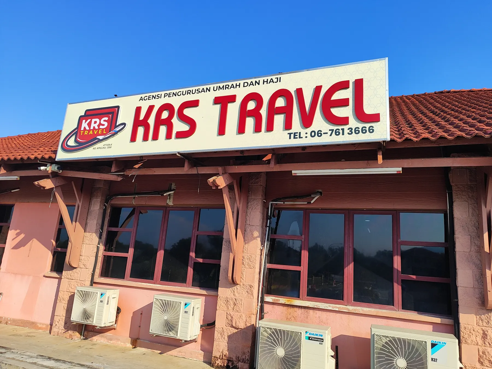
KRS Travel Sdn Bhd ialah syarikat milik penuh Bumiputera yang ditubuhkan pada 12 Februari 1999. Selama 27 tahun kami membawa jemaah dari seluruh Malaysia menunaikan Umrah dan Haji — lebih 217,000 orang setakat ini — dengan bimbingan profesional, penginapan yang dekat dengan Haramain, dan layanan yang menjadikan perjalanan itu bermakna.
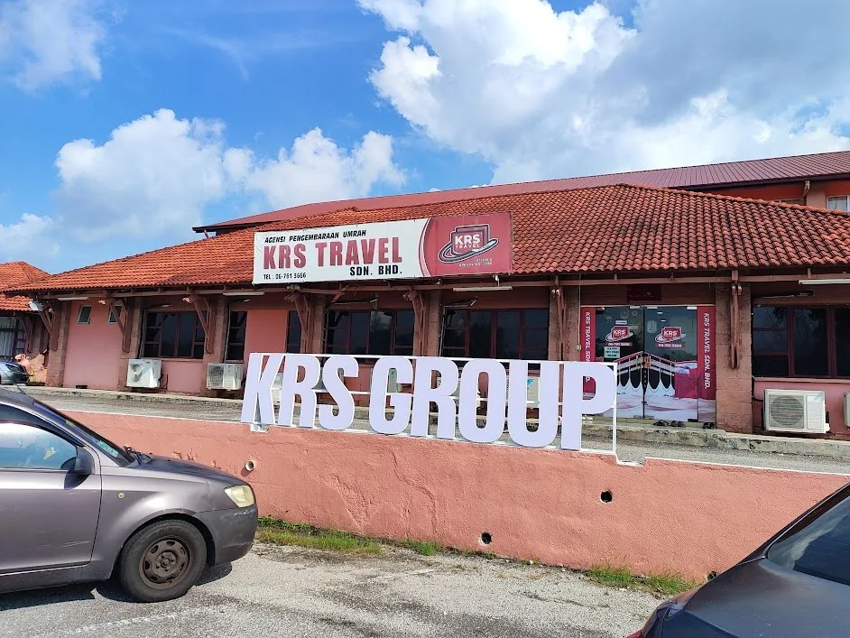
KRS Travel Sdn Bhd merupakan sebuah syarikat milik penuh Bumiputera yang ditubuhkan dan diperbadankan pada 12 Februari 1999 (No. 477239-X), serta berlesen di bawah Kementerian Pelancongan Malaysia (No. Lesen KPL 3590). Sejak lebih 27 tahun lalu, KRS Travel berdedikasi membantu umat Islam menunaikan ibadah Umrah dan Haji dengan tenang, selesa dan penuh bimbingan. Sepanjang tempoh tersebut, kami telah menguruskan lebih 217,000 jemaah dari seluruh Malaysia.
Selain menyediakan Pakej Umrah, Haji, Visa dan Tiket, KRS Travel juga menawarkan pelbagai pakej pelancongan domestik dan antarabangsa. Kami merupakan syarikat berdaftar dengan Kementerian Kewangan (MOF), Persatuan Pengangkutan Udara Antarabangsa (IATA), Persatuan Francais Malaysia (MFA), serta beberapa agensi kerajaan dan swasta. KRS Travel juga berdaftar di bawah Persatuan Ejen-Ejen Pelancongan (ATA), Pengembaraan Bumiputera Malaysia (BUMITRA), Persatuan Agensi Umrah dan Haji (PAPUH), serta Abacus Distribution System (M) Sdn. Bhd.
Dengan sokongan rangkaian cawangan di seluruh Malaysia, anak-anak syarikat kumpulan KRS, serta kerjasama strategik bersama konsortium lain, KRS Travel terus memperkukuh kedudukan dalam industri pelancongan. Kami komited memberikan pengalaman ibadah dan percutian terbaik melalui pilihan pakej yang pelbagai, mutawwif berpengalaman, serta kemudahan penginapan dan pengangkutan yang berkualiti — pada nilai yang kompetitif dan berpatutan.
Ibu Pejabat
Liputan akhbar, televisyen dan portal berita nasional sepanjang perjalanan kami menguruskan jemaah umrah dan haji.
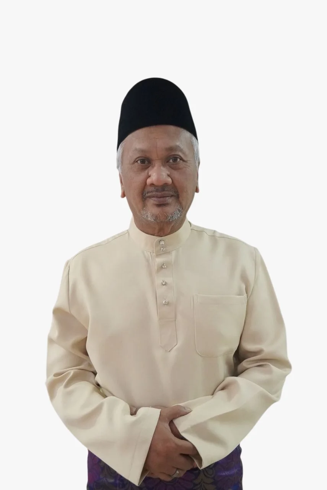
“JEMAAH adalah raja. Jaga dan bimbing mereka dengan penuh amanah. Jangan salah guna duit bayaran sehingga jemaah selamat pulang ke tanah air.”
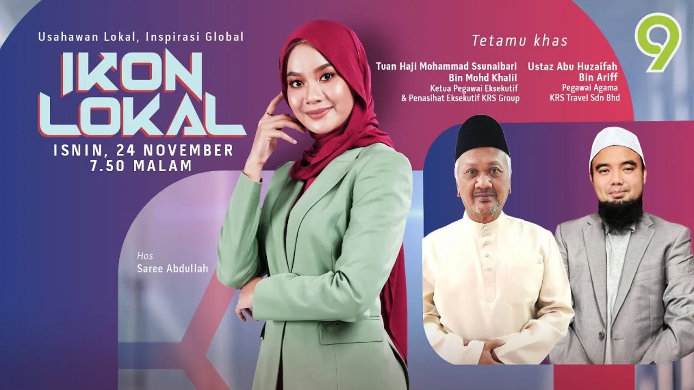
Dapatkan informasi menarik dari Tn. Hj. Ssunaibari & Ustaz Hj. Abu Huzaifa yang menceritakan tentang pakej-pakej umrah & haji yang KRS tawarkan.
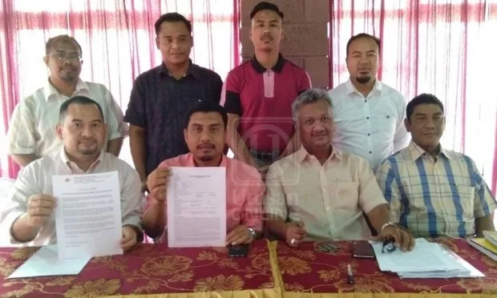
“KRS Travel Sdn. Bhd. telah menanggung kos penghantaran 80 peserta yang menjadi mangsa penyelewengan wang pakej umrah di Pahang baru-baru ini mengerjakan ibadat itu.”
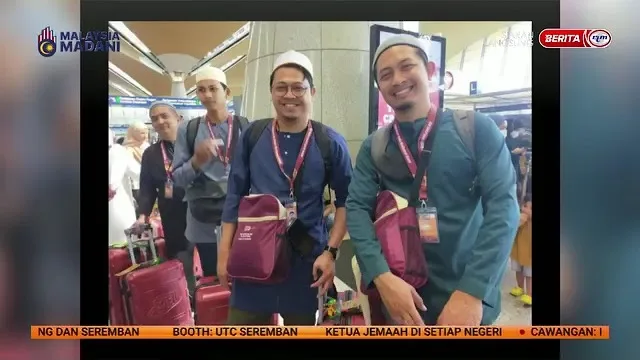
Tak sempat nak tonton temu bual bersama KRS Travel di rancangan ‘Selamat Pagi Malaysia’? Kami ada rakamannya di sini.
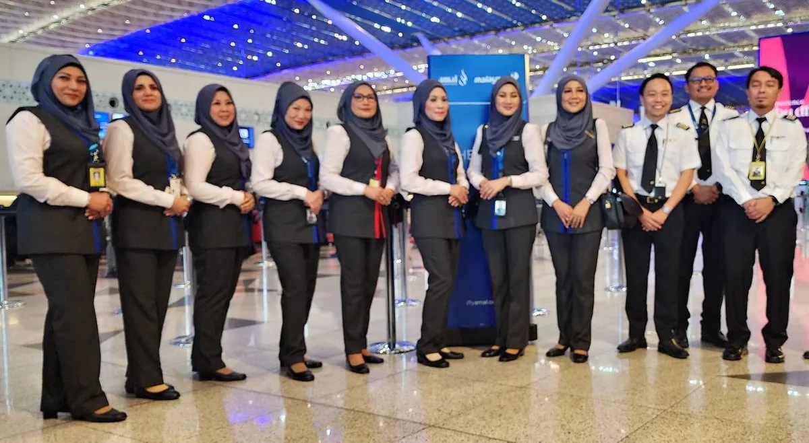
“Amal by Malaysia Airlines menyasarkan untuk membawa lebih daripada empat kumpulan jemaah umrah dalam tempoh sebulan melalui program terbaharunya.”
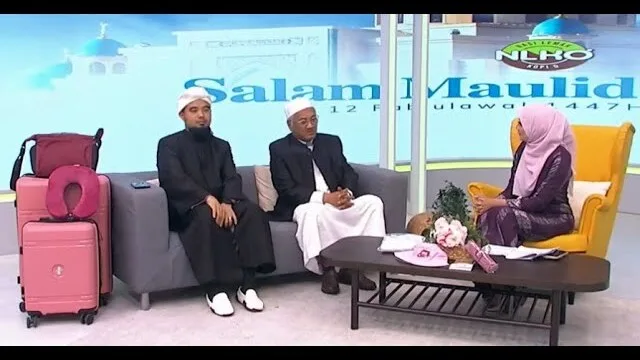
Tuan Hj Ssunaibari dan Ustaz Hj Abu Huzaifa di dalam temu ramah oleh Nasi Lemak Kopi O (NLKO) di TV9.
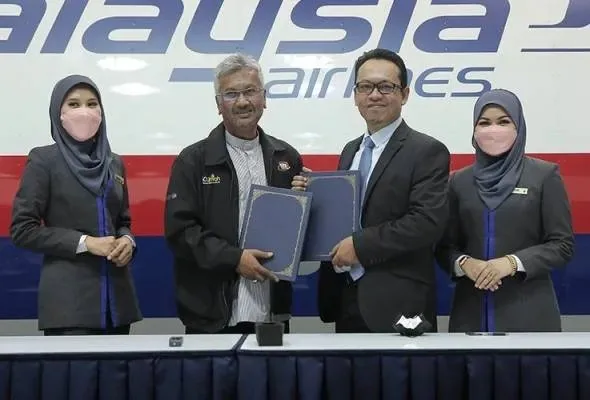
“KRS Travel Sdn Bhd memeterai perjanjian kontrak dan memorandum persefahaman (MoU) Konsortium Agensi Pelancongan Umrah bersama Amal by Malaysia Airlines.”
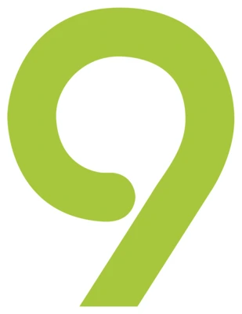
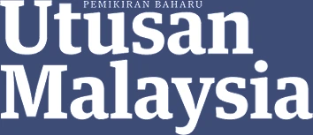
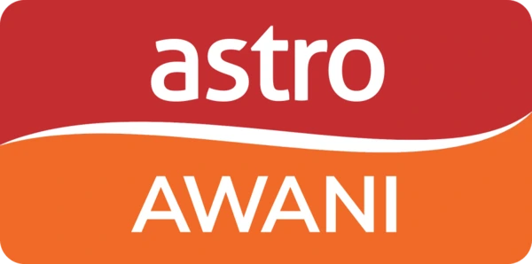
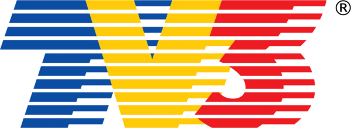
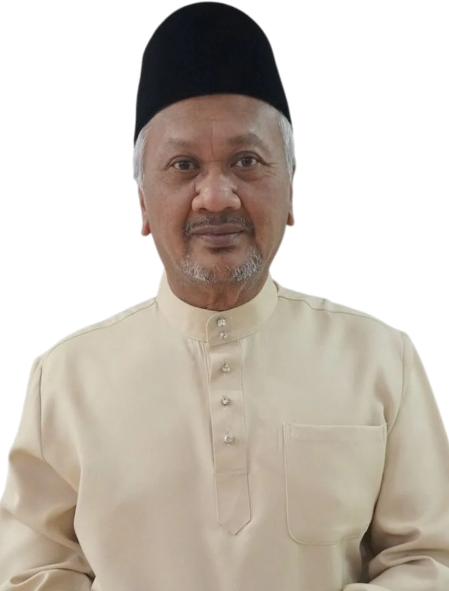
“Kepuasan anda adalah matlamat kami.”
Melaksanakan perkhidmatan yang terbaik, memuaskan dan memenuhi keperluan pelanggan kami. Konsep kami adalah menjalankan amanah yang diberikan serta pelaksanaan rancangan demi perniagaan yang berterusan. Harapan kami agar dapat memberikan perkhidmatan yang terbaik dan memuaskan pelanggan-pelanggan kami selari dengan motto kami.
KRS Travel Sdn. Bhd. sentiasa komited untuk mengendalikan semua perniagaan berkaitan pelancongan dan perjalanan untuk anda dan seluruh ahli keluarga dengan sewajarnya, selesa dan selaras dengan keperluan Islam.
Hj Mohammad Ssunaibari Bin Mohd Khalil Chief Executive Officer
Kepuasan anda, matlamat kami — dalam setiap pakej, setiap rombongan, setiap musim.
Menjadi agensi Umrah & Haji pilihan utama dengan reputasi global, membawa lebih ramai jemaah menunaikan ibadah dengan yakin.
Menyediakan pakej terbaik dengan layanan mesra, bimbingan menyeluruh, serta kemudahan selesa untuk setiap jemaah.
Integriti, amanah, profesionalisme dan kesungguhan dalam memenuhi keperluan rohani jemaah.
Nilai yang memandu setiap urusan kami dengan jemaah.
Harga, tarikh dan jarak hotel dinyatakan seperti adanya — tiada kos tersembunyi selepas anda mendaftar.
Wang, dokumen dan keselamatan jemaah adalah amanah yang kami pegang dari pendaftaran hingga pulang.
Mutawwif bertauliah, petugas berpengalaman dan pengurusan berlesen di setiap peringkat perjalanan.
Kursus pra-berlepas, bimbingan ibadah dan sokongan 24 jam di Tanah Suci — bukan sekadar tiket dan hotel.
Dipimpin oleh pengurusan berpengalaman.
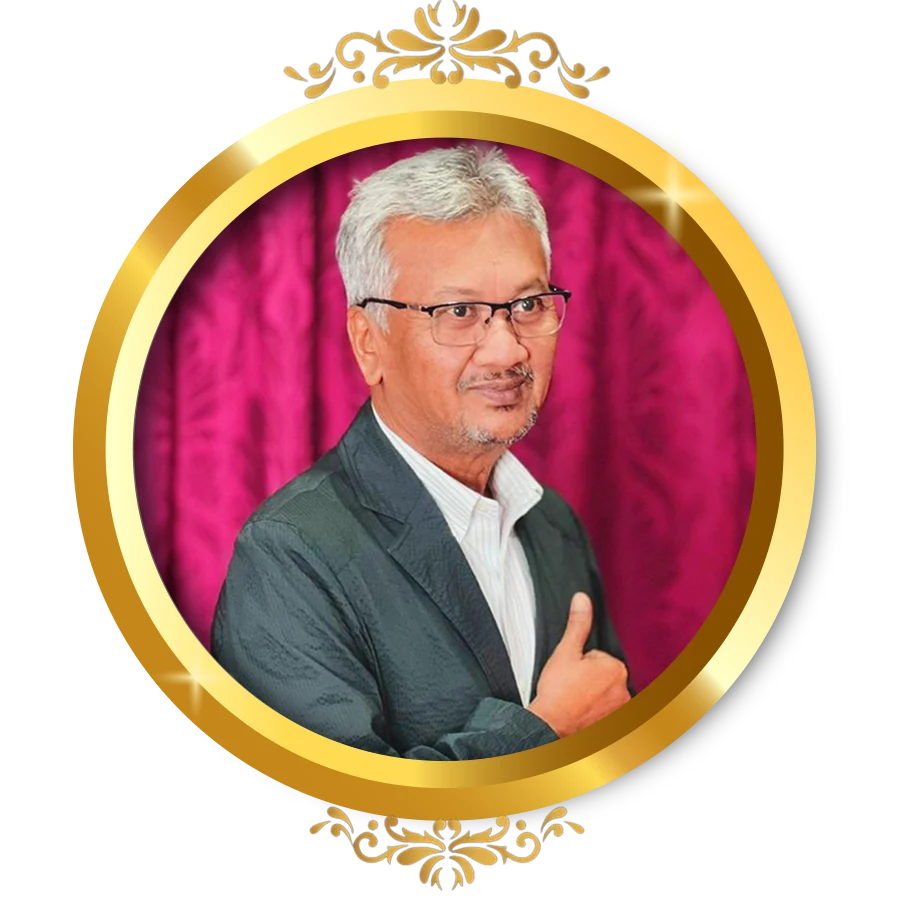
Chief Executive Officer
Director
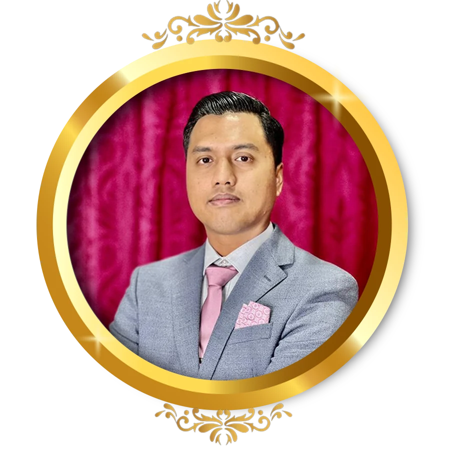
Director
Setiap lesen dan pendaftaran boleh disemak. Klik mana-mana sijil untuk melihat salinan penuh.
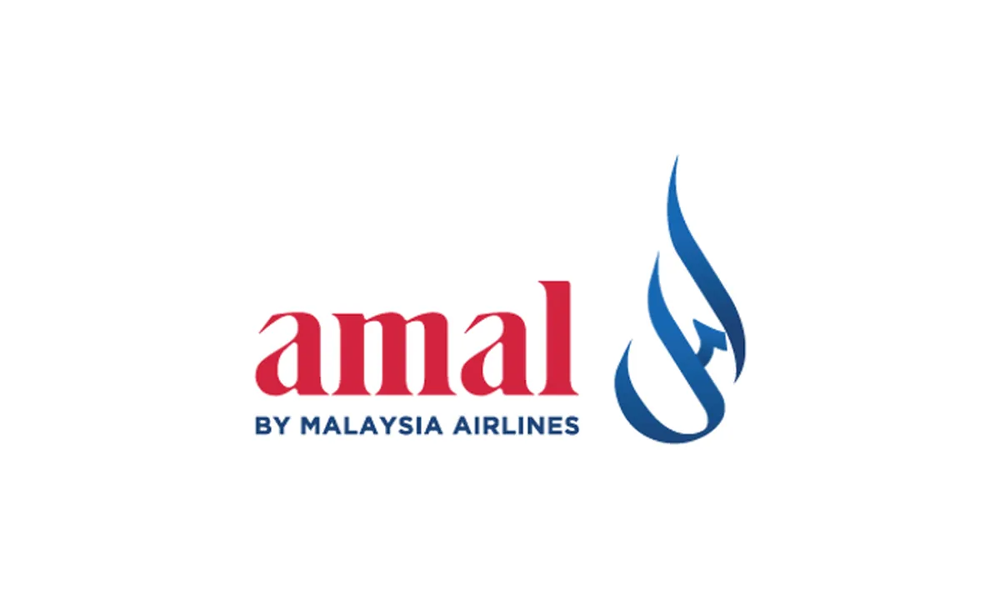
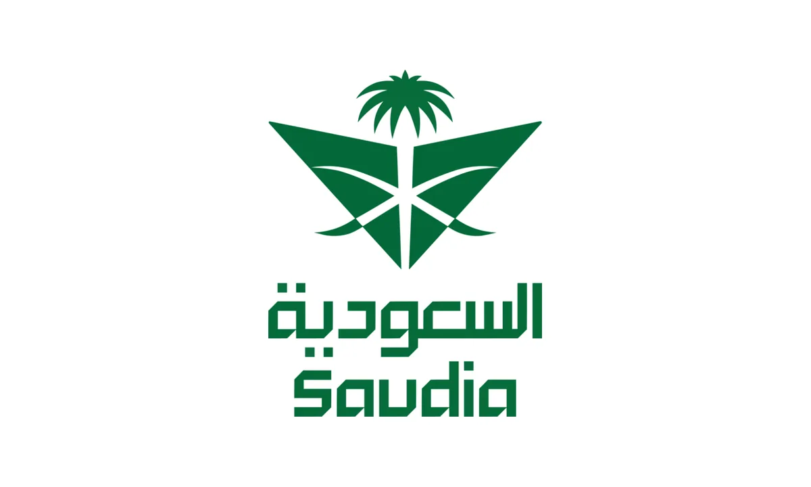
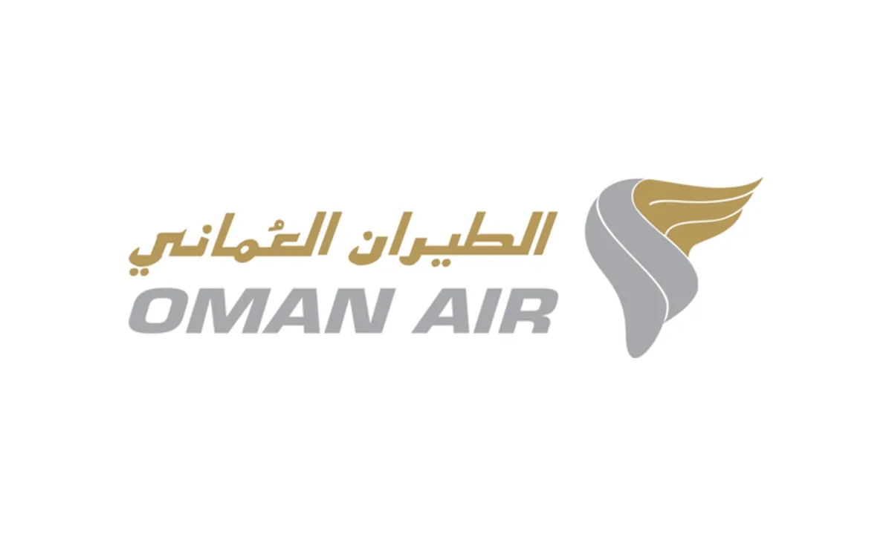
Enam cawangan merentasi Semenanjung — datang berjumpa kami, atau hubungi cawangan yang paling hampir dengan anda.
Cawangan
Cawangan
Cawangan
Cawangan
Cawangan
Cawangan
Semak tarikh, ketersediaan tempat dan sebut harga rombongan — atau tanya apa sahaja tentang umrah, haji, tiket penerbangan dan visa. Pasukan Seremban kami menjawab setiap hari bekerja, 9 pagi – 6 petang.
Rakan Strategik & Pengiktirafan